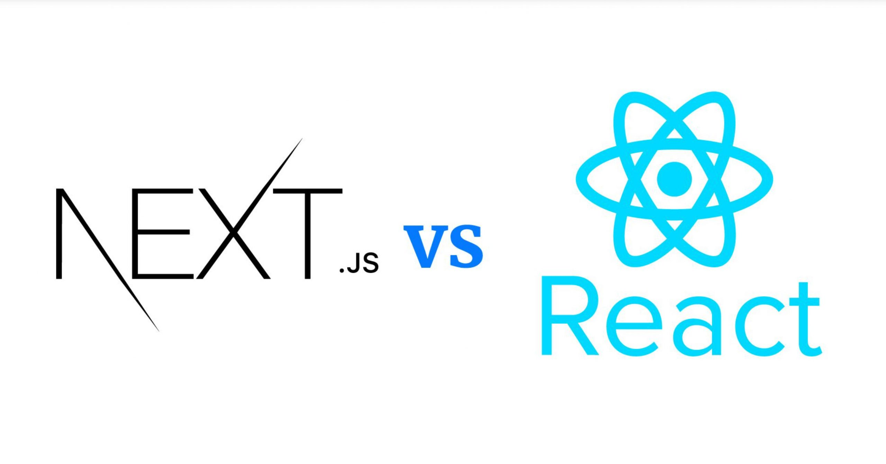

We typically have a number of projects being worked on at any time, ranging from the more experimental to the clearly defined. Looking ahead, we'd like to start regularly sharing more about what we have been working on with the community across these projects.
ReactJs
React is a UI library created by Meta to build reactive apps based on event triggers. In a traditional approach, a website reloads when data needs to be changed, which means when something is clicked, the whole page reloads to show another state which in most cases can be slow to reload.
Furthermore, the concept of using React components stops the reprocessing of every code or logic for that particular page. React components can be stateless or stateful and only re-render within the scope of the applied state.
React is built to be declarative. That means you get to decide the workflow. You get to control how your app works, making React a powerful tool.
If you feel that the React documentation goes at a faster pace than you’re comfortable with, check out this overview of React by Tania Rascia. It introduces the most important React concepts in a detailed, beginner-friendly way. Once you’re done, give the documentation another try! If you feel that the React documentation goes at a faster pace than you’re comfortable with, check out this overview of React by Tania Rascia. It introduces the most important React concepts in a detailed, beginner-friendly way. Once you’re done, give the documentation another try!
People come to React from different backgrounds and with different learning styles. Whether you prefer a more theoretical or a practical approach, we hope you’ll find this section helpful.
If you prefer to learn by doing, start with our practical tutorial.
If you prefer to learn concepts step by step, start with our guide to main concepts.
Like any unfamiliar technology, React does have a learning curve. With practice and some patience, you will get the hang of it.
NextJs

Next.js is a React framework for building full-stack web applications. You use React Components to build user interfaces, and Next.js for additional features and optimizations.Under the hood, Next.js also abstracts and automatically configures tooling needed for React, like bundling, compiling, and more. This allows you to focus on building your application instead of spending time with configuration.Whether you're an individual developer or part of a larger team, Next.js can help you build interactive, dynamic, and fast React applications.
In summary, while React.js is a powerful library for building UI components, Next.js extends React’s capabilities by adding routing, rendering options, and server-side functionalities, making it a more comprehensive solution for building web applications.
Next.js has two different routers: the App Router and the Pages Router. The App Router is a newer router that allows you to use React's latest features, such as Server Components and Streaming. The Pages Router is the original Next.js router, which allowed you to build server-rendered React applications and continues to be supported for older Next.js applications At the top of the sidebar, you'll notice a dropdown menu that allows you to switch between the App Router and the Pages Router features. Since there are features that are unique to each directory, it's important to keep track of which tab is selected.The breadcrumbs at the top of the page will also indicate whether you're viewing App Router docs or Pages Router docs.